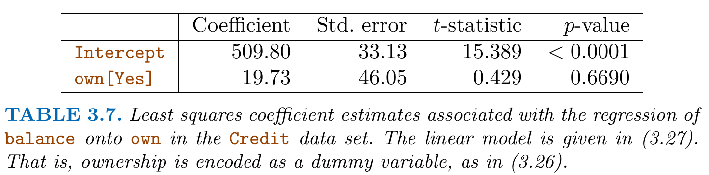
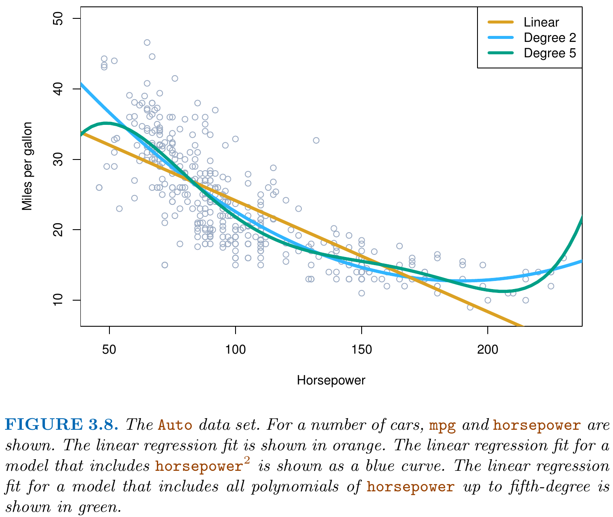
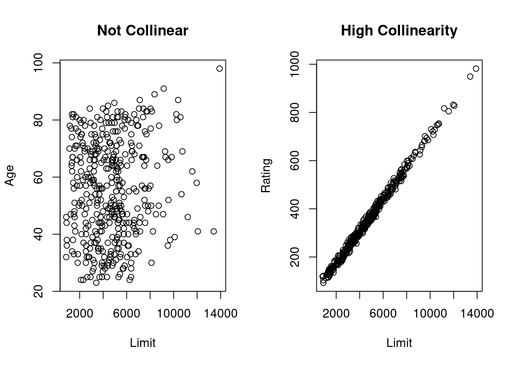
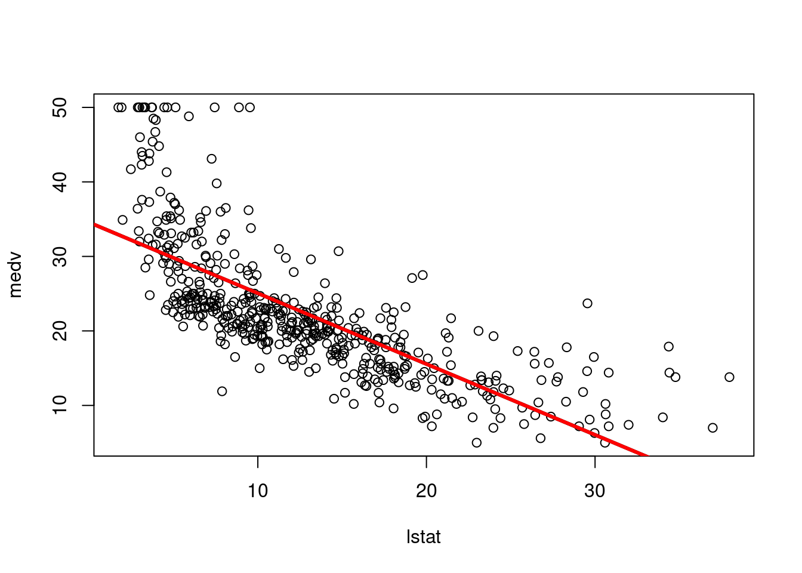
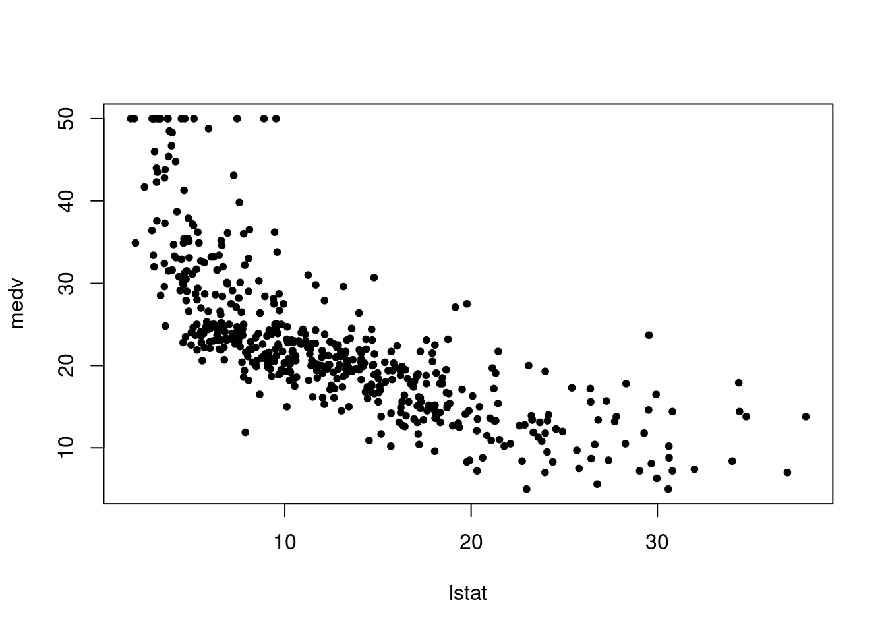
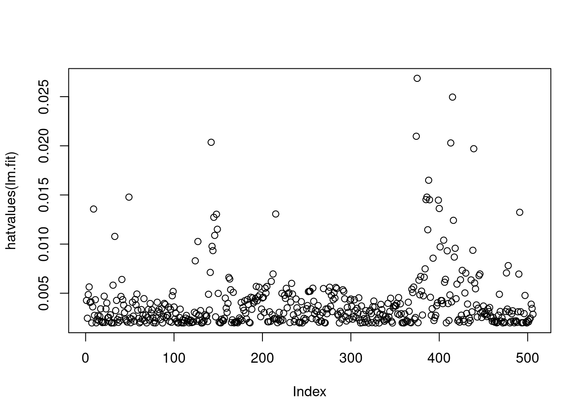

I.e., on average, the estimation results equal the true (unknown) parameters. However, in an actual data analysis, we only have one realization of the estimators \(\hat\beta_0\) and \(\hat\beta_1\) computed from one give dataset and thus we cannot compute averages of estimation results. Each single estimation result will have estimation errors, i.e.,
The following code generates artificial data to reproduce the plot in Figure 3.3 of our course textbook ISLR.
## ################################# A function to generate data ## similar to that shown in Fig 3.3## ##############################beta_0 <-0.1# intercept parameterbeta_1 <-5## A Function to simulate datamyDataGenerator <-function(){ n <-50# sample size beta_0 <-0.1# intercept parameter beta_1 <-5# slope parameter X <-runif(n, min =-2, max =2) # predictor error <-rnorm(n, mean =0, sd =8.5) # error term Y <- beta_0 + beta_1 * X + error # outcome ##return(data.frame("Y"= Y, "X"= X))}## Generate a first realization of the dataset.seed(123)data_sim <-myDataGenerator()head(data_sim)
Y X
1 -18.4853427 -0.8496899
2 12.9872926 1.1532205
3 -0.4167901 -0.3640923
4 -1.9138159 1.5320696
5 19.5667725 1.7618691
6 -5.3639241 -1.8177740
Using repeated samples form the data generating process defined in myDataGenerator(), we can generate multiple estimation results of the unknown simple linear regression parameters \(\beta_0\) and \(\beta_1\) and plot the corresponding empirical regression lines:
## Estimationlm_obj <-lm(Y ~ X, data = data_sim)## Plotting the resultspar(mfrow=c(1,2)) # Two plots side by side## First Plot (fit for the first realization of the data)plot(x = data_sim$X, y = data_sim$Y, xlab ="X", ylab ="Y")abline(a = beta_0, b = beta_1, col ="red")abline(lm_obj, col ="blue")## Second Plot (fits for multiple data realizations)plot(x = data_sim$X, y = data_sim$Y, xlab ="X", ylab ="Y", type ="n") # type = "n": empty plot##for(r in1:10){ data_sim_new <-myDataGenerator() lm_obj_new <-lm(Y ~ X, data=data_sim_new)abline(lm_obj_new, col ="lightskyblue")}## Adding the first fitabline(a = beta_0, b = beta_1, col ="red", lwd =2)abline(lm_obj, col ="blue", lwd =2)
Coding-Questions: Can you do this animated? https://gganimate.com/articles/gganimate.html
The magnitude of the estimation errors is expressed in unites of standard errors:
where we subtract \(2\) from the sampel size \(n\) since \(n-2\) are the remaining degrees of freedom in the data after estimating two parameters \(\hat\beta_0\) and \(\hat\beta_1\).
Knowing \(\operatorname{SE}(\hat\beta_0)\) and \(\operatorname{SE}(\hat\beta_1)\) allows us to construct Confidence Intervals:
Interpretation: There is approximately a 95% change (in infinite resamplings) that the (random) confidence interval \(\operatorname{CI}_{\beta_1}\) contains the true (fix) parameter value \(\beta_1\).
Thus, a given confidence interval either contains the true parameter value or not and we usually do not know it. To understand the interpretation of confidence intervals, it is very instructive to look at visualizations:
Standard errors can also be used to do hypothesis testing:
\[
\begin{align*}
H_0:&\;\text{There is no relationship between $Y$ and $X$; i.e. $\beta_1=0$}\\
H_1:&\;\text{There is a relationship between $Y$ and $X$; i.e. $\beta_1\neq 0$}
\end{align*}
\]
Multiple linear regression is more than mere composition of single simple linear regression models.
Take a look at the following two simple linear regression results:
Thus in separate simple linear regressions, the effects of radio and the effect of newspaper on sales are both (but separately) statistically.
By contrast, when looking at the multiple linear regression when regressing sales onto both radio and newspaper, only the effect of radio remains statistically significant:
Reason: Omitted Variable Bias
radio has an effect on sales
newspaper has actually no effect on sales
But, newspaper is “strongly” correlated with radio (cor(newspaper,radio)=0.3541); see Table 3.5
Thus, when omitting radio from the multiple regression model, newspaper becomes a surrogate for radio. This is called a Omitted Variable Bias.
Conclusion: Simple linear regression can be dangerous. We need to control for all possibly relevant variables if we want to interpret the estimation results (“Inference”).
Interpretation of the Coefficients in Table 3.5
For fixed values of TV and newspaper, spending additionally 1000 USD for radio, increases on average sales by approximately 189 units.
(Ch. 3.2.2) Some Important Questions
1. Is There a Relationship Between the Response and Predictors?
\[
\begin{align*}
H_0:&\;\beta_1=\beta_2=\dots=\beta_p=0\\
H_1:&\;\text{at least one $\beta_j\neq 0$; $j=1,\dots,p$}
\end{align*}
\]
Thus, if \(H_0\) is correct, we expect values of \(F\approx 1\).
But if \(H_1\) is correct, we expect values of \(F\gg 1\).
Caution: Cannot be computed if \(p>n\). (Chapter 6 on “high dimensional problems”)
(Ch. 3.3) Other Considerations in the Regression Model
(Ch. 3.3.1) Qualitative Predictors
Often some predictors are qualitative variables (also known as a factor variables). For instance, the Credit dataset contains the following qualitative predictors:
own (house ownership)
student (student status)
status (marital status)
region (East, West or South)
Predictors with Only Two Levels
If a qualitative predictor (factor) only has two levels (i.e. possible values), then incorporating it into a regression model is very simple. We simply create an indicator or dummy variable that takes on two possible numerical values; for instance,
\[
x_{i} = \left\{
\begin{array}{ll}
1&\quad \text{if the $i$th person owns a house}\\
0&\quad \text{if the $i$th person does not own a house.}
\end{array}\right.
\]
Using this dummy variable as a predictor in the regression equation results in the following regression model:
\[
y_{i}=\beta_0 + \beta_1 x_i + \epsilon_i = \left\{
\begin{array}{ll}
\beta_0 + \beta_1 + \epsilon_i &\quad \text{if the $i$th person owns a house}\\
\beta_0 + \epsilon_i &\quad \text{if the $i$th person does not own a house}
\end{array}\right.
\]
Interpretation:
\(\beta_0\): The average credit card balance among those who do not own a house
\(\beta_0+\beta_1\): The average credit card balance among those who do own a house
\(\beta_1\): The average difference in credit card balance between owners and non-owners

Alternatively, instead of a 0/1 coding scheme, we could create a dummy variable
\[
x_{i} = \left\{
\begin{array}{ll}
1 &\quad \text{if the $i$th person owns a house}\\
-1 &\quad \text{if the $i$th person does not own a house.}
\end{array}\right.
\]
\[
y_{i}=\beta_0 + \beta_1 x_i + \epsilon_i = \left\{
\begin{array}{ll}
\beta_0 + \beta_1 + \epsilon_i&\quad \text{if the $i$th person owns a house}\\
\beta_0 - \beta_1 + \epsilon_i&\quad \text{if the $i$th person does not own a house}
\end{array}\right.
\]
Interpretation:
\(\beta_0\): The overall average credit card balance (ignoring the house ownership effect)
\(\beta_1\): The average amount by which house owners and non-owners have credit card balances that are above and below the overall average, respectively.
Qualitative Predictors with More than Two Levels
When a qualitative predictor has more than two levels, a single dummy variable cannot represent all possible values. In this situation, we can create additional dummy variables. For example, for the region\(\in\{\)South, West, East\(\}\) variable we create two dummy variables. The first could be
\[
x_{i1} = \left\{
\begin{array}{ll}
1&\quad \text{if the $i$th person is from the South}\\
0&\quad \text{if the $i$th person is not from the South,}
\end{array}\right.
\]
and the second could be
\[
x_{i2} = \left\{
\begin{array}{ll}
1&\quad \text{if the $i$th person is from the West}\\
0&\quad \text{if the $i$th person is not from the West.}
\end{array}\right.
\]
Using both of these dummy variables results in the following regression model: order to obtain the model
\[
y_{i}=\beta_0 + \beta_1 x_{i1} + \beta_2 x_{i2} + \epsilon_i = \left\{
\begin{array}{ll}
\beta_0 + \beta_1 + \epsilon_i& \quad \text{if the $i$th person is from the South}\\
\beta_0 + \beta_2 + \epsilon_i& \quad \text{if the $i$th person is from the West}\\
\beta_0 + \epsilon_i& \quad \text{if the $i$th person is from the East.}\\
\end{array}\right.
\]
Interpretation:
\(\beta_0\): The average credit card balance for individuals from the East
\(\beta_1\): The difference in the average balance between people from the South versus the East
\(\beta_2\): The difference in the average balance between people from the West versus the East
There are many different ways of coding qualitative variables besides the dummy variable approach taken here. All of these approaches lead to equivalent model fits, but the coefficients are different and have different interpretations, and are designed to measure particular contrasts. (A detailed discussion of contrasts is beyond the scope of this lecture.)
(Ch. 3.3.2) Extensions of the Linear Model
Interaction Effects: Removing the Additive Assumption using Interaction Effects
which states that the average increase in sales associated with a one-unit increase in TV is always \(\beta_1,\) regardless of the amount spent on radio.
However, this simple model may be incorrect. Suppose that there is a synergy effect, such that spending money on radio advertising actually increases the effectiveness of TV advertising.
Figure 3.5 suggests that such an effect may be present in the advertising data:
When levels of either TV or radio are low, then the true sales are lower than predicted by the linear model.
But when advertising is split between the two media, then the model tends to underestimate sales.
Solution: Interaction Effects:
Consider the standard linear regression model with two variables,
Here each predictor \(X_1\) and \(X_2\) has a given effect, \(\beta_1\) and \(\beta_2\), on \(Y\) and this effect does not depend on the value of the other predictor. (Additive Assumption)
One way of extending this model is to include a third predictor, called an interaction term, which is constructed by computing the product of \(X_1\) and \(X_2.\) This results in the model
Thus, a change in the value of \(X_2\) will change the association between \(X_1\) and \(Y.\)
A similar argument shows that a change in the value of \(X_1\) changes the association between \(X_2\) and \(Y.\)
Let us return to the Advertising example. A linear model that uses radio, TV, and an interaction, radio\(\times\)radio, between the two to predict sales takes the form
\(\beta_3\) denotes the increase in the effectiveness of TV advertising associated with a one-unit increase in radio advertising (or vice-versa).
Interpretation of Table 3.9:
Both (separate) main effects, TV and radio, are statistically significant (\(p\)-values smaller than 0.01).
Additionally, the \(p\)-value for the interaction term, TV\(\times\)radio, is extremely low, indicating that there is strong evidence for \(H_1: \beta_3\neq 0.\) In other words, it is clear that the true relationship is not additive.
Hierarchical Principle:
If we include an interaction in a model, we should also include the main effects, even if the \(p\)-values associated with their coefficients are not significant.
Interactions with Qualitative Variables:
An interaction between a qualitative variable and a quantitative variable has a particularly nice interpretation.
Consider the Credit data set and suppose that we wish to predict balance using the predictors:
income (quantitative) and
student (qualitative) using a dummy variable with \(x_{i2}=1\) if \(i\)th person is a student and \(x_{i2}=0\) if not.
In the absence of an interaction term, the model takes the form
Thus, the regression lines for students and non-students have different intercepts, \(\beta_0+\beta_2\) versus \(\beta_0\), but the same slope \(\beta_1\).
This represents a potentially serious limitation of the model, since in fact a change in income may have a very different effect on the credit card balance of a student versus a non-student.
This limitation can be addressed by adding an interaction variable, created by multiplying income with the dummy variable for student. Our model now becomes
Now we have different intercepts for students and non-students but also different slopes for these groups.
Polynomial Regression: Non-linear Relationships
Polynomial regression allows to accommodate non-linear relationships between the predictors \(X\) and the outcome \(Y.\) 
For example, the points in Figure 3.8 seem to have a quadratic shape, suggesting that a model of the form
This regression model involves predicting mpg using a non-linear function of horsepower. But it is still a linear model! It’s simply a multiple linear regression model with \(X_1=\)horsepower and \(X_2 =(\)horsepower\()^2.\)
So we can use standard linear regression software to estimate \(\beta_0\), \(\beta_1\), and \(\beta_2\) in order to produce a non-linear fit.
(Ch. 3.3.3) Potential Problems
1. Non-linearity of the response-predictor relationships.
Diagnostic residual plots are most useful to detect possible non-linear response-predictor relationships.
library("ISLR2")data(Auto) ## Gives the variable names in the Auto dataset# names(Auto)## Simple linear regressionlmobj_1 <-lm(mpg ~ horsepower, data = Auto)## Quadratic regression lmobj_2 <-lm(mpg ~ horsepower +I(horsepower^2), data = Auto)## Diagnostic Plotpar(mfrow =c(1,2))plot(lmobj_1, which =1)plot(lmobj_2, which =1)
Residual plots are a useful graphical tool for identifying non-linearity. Given a simple linear regression model, we can plot the residuals,
\[
e_i = y_i - \hat{y}_i,
\]
versus the predictor \(x_i.\)
In the case of a multiple regression model, since there are multiple predictors, we instead plot the residuals versus the predicted (or fitted) values \(\hat{y}_i.\) Ideally, the residual plot will show no fitted discernible pattern. The presence of a pattern may indicate a problem with some aspect of the linear model.
If the residual plot indicates that there are non-linear associations in the data, then a simple approach is to use non-linear transformations of the predictors, such as
\[
\log(X),\; \sqrt{X},\; \text{or}\; X^2
\]
in the regression model. In the later chapters, we will discuss other more advanced non-linear approaches for addressing this issue.
2. Correlation of Error Terms
An important assumption of the linear regression model is that the error terms, \(\epsilon_1, \epsilon_2, \dots , \epsilon_n\), are uncorrelated. What does this mean? For instance, if the errors are uncorrelated, then the fact that \(\epsilon_i\) is positive provides little or no information about the sign of \(\epsilon_{i+1}.\) The standard errors that are computed for the estimated regression coefficients or the fitted values are based on the assumption of uncorrelated error terms. If in fact there is correlation among the error terms, then the estimated standard errors will tend to underestimate the true standard errors.
Correlations among the error terms typically occur in time series data (see Fig. 3.10).
3. Non-Constant Variance of Error Terms
Another important assumption of the linear regression model is that the error terms have a constant variance,
\[
Var(\epsilon_i) = \sigma^2.
\]
The standard formulas for standard errors, confidence intervals, and hypothesis tests associated with the linear model rely upon this assumption.
One can identify non-constant variances “heteroscedasticity” in the errors, using diagnostic residual plots.
Often one observes that the magnitude of the scattering of the residuals tends to increase with the fitted values which indicates. When faced with this problem, one possible solution is to transform the response \(Y\) using a concave function such as
\[
\log(Y)\;\text{ or }\; \sqrt{Y}.
\]
Such a transformation results in a greater amount of shrinkage of the larger responses, leading to a reduction in heteroscedasticity.
## Quadratic regression lmobj_2 <-lm(mpg ~ horsepower +I(horsepower^2), data = Auto)## Quadratic regression with transformed response log(Y)lmobj_3 <-lm(I(log(mpg)) ~ horsepower +I(horsepower^2), data = Auto)## Diagnostic Plotpar(mfrow =c(1,2))plot(lmobj_2, which =1)plot(lmobj_3, which =1)
4. Outliers
An outlier is a point for which \(y_i\) is far from the value predicted by the outlier model. Outliers can arise for a variety of reasons, such as incorrect recording of an observation during data collection.
Outliers typically have a strong effect on the \(R^2\) value since they add a very large residual to its computation.
Figure 3.12 in the textbook ISLR shows a clear outlier (observation 20) which, however, has a typical predictor value \(x_i\). Such outliers have little effect on the regression fit.
Figure 3.13 in the textbook ISLR shows again a clear outlier (observation 41) which has a predictor value \(x_i\) that is very atypical. Such outliers are said to have large leverage giving them power to affect the regression fit considerably.
Summary: Critical outliers have both, large residuals and large leverage.
5. High Leverage Points
In order to quantify an observation’s leverage, we compute the leverage statistic\(h_i\) for each observation \(i=1,\dots,n.\) A large value of this statistic indicates an observation with high leverage. For a simple linear regression,
There is a simple extension of \(h_i\) to the case of multiple predictors, though we do not provide the formula here.
The leverage statistic \(h_i\) is always between \(1/n\) and \(1\)
The average leverage for all the observations is equal to \(\bar{h}=\frac{1}{n}\sum_{i=1}^n h_i=(p + 1)/n.\)
If a given observation has a leverage statistic \(h_i\) that greatly exceeds \((p+1)/n,\) then we may suspect that the corresponding point has high leverage.
6. Collinearity
Collinearity refers to the situation in which two or more predictor variables are closely related to one another.
library("ISLR2")data(Credit) # names(Credit)par(mfrow=c(1,2))plot(y = Credit$Age, x = Credit$Limit, main ="No Collinearity", ylab ="Age", xlab ="Limit")plot(y = Credit$Rating, x = Credit$Limit, main ="Strong Collinearity", ylab ="Rating", xlab ="Limit")

We call this situation multicollinearity.
To detect multicollinearity issues, one can use the variance inflation factor (VIF)
where \(R^2_{X_j|X_-j}\) is the \(R^2\) from a regression of \(X_j\) onto all of the other predictors.
If \(R^2_{X_j|X_-j}\) is close to one, then multicollinearity is present, and \(\operatorname{VIF}(\hat{\beta}_j)\) will be large.
In the Credit data, a regression of balance on age, rating, and limit indicates that the predictors have VIF values of 1.01 (age), 160.67 (rating), and 160.59 (limit). Thus, as we suspected, there is considerable collinearity in the data!
Possible solutions:
Drop one of the problematic variables from the regression. This can usually be done without much compromise to the regression fit, since the presence of collinearity implies that the information that this variable provides about the response is redundant in the presence of the other variables. Caution: In econometrics, dropping control variables is generally not a good idea since control variables are there to rule out possible issues with omitted variables biases.
Combine the collinear variables together into a single predictor. For instance, we might take the average of standardized versions of limit and rating in order to create a new variable that measures credit worthiness.
Use a different estimation procedure like ridge regression.
Live with it. Sometimes you’re not allowed to drop or combine variables (e.g. important control variables) and also no other estimation procedure can be used. Then you have to live with large standard errors due to multicollinearity. But at least you know where the large stand errors are coming from.
(Ch. 3.5) Comparison of Linear Regression with K-Nearest Neighbors
Linear regression is an example of a parametric approach because it assumes a linear model form for \(f(X).\)
Advantages of parametric approaches:
Typically easy to fit
Simple interpretation
Simple inference
Disadvantages of parametric approaches:
The parametric model assumption can be far from true; i.e.
Alternative: Non-parametric methods such as K-nearest neighbors regression since non-parametric approaches do not explicitly assume a parametric form for \(f(X).\)
K-nearest neighbors regression (KNN regression)
Given a value for \(K\) and a prediction point \(x_0,\) KNN regression regression …
identifies the \(K\) training observations that are closest to \(x_0\), represented by the index set \(\mathcal{N}_0\subset\{1,2,\dots,n_{Train}\}.\)
estimates \(f(x_0)\) using the average of all the training responses \(y_i\) with \(i\in\mathcal{N}_0.\)
In general, the optimal value for \(K\) will depend on the bias-variance tradeoff, which we introduced in Chapter 2.
A small value for \(K\) provides the most flexible fit, which will have low bias but high variance. This variance is due to the fact that the prediction in a given region is entirely dependent, e.g., on just one observation of \(K=1\).
A large value of \(K\) provide a smoother and less wiggly fit; the prediction in a region is an average of several points, and so changing one observation has a smaller effect. However, the smoothing may cause bias by masking some of the structure in \(f(X).\)
In Chapter 5, we introduce several approaches for estimating test error rates. These methods can be used to identify the optimal value of \(K\) in KNN regression.
Generally, the parametric approach will outperform the non-parametric approach if the parametric form that has been selected is close to the true form of \(f\) and vice versa.
Figure 3.17 of our textbook ISLR provides an example with data generated from a one-dimensional linear regression model. The black solid lines represent the true \(f(X)\), while the blue curves correspond to the KNN fits using \(K = 1\) (left plot) and \(K = 9\) (right plot). In this case, the \(K = 1\) predictions are far too variable, while the smoother \(K = 9\) fit is much closer to the true \(f(X).\) However, since the true relationship is linear, it is hard for a non-parametric approach to compete with linear regression: a non-parametric approach incurs a cost in variance that is here not offset by a reduction in bias.
The blue dashed line in the left-hand panel of Figure 3.18 represents the linear regression fit to the same data. It is almost perfect. The right-hand panel of Figure 3.18 reveals that linear regression outperforms KNN for this data.
Figure 3.19 displays a non-linear situations in which KNN performs much better than linear regression.
Curse of dimensionality:
Unfortunately, in higher dimensions, KNN often performs worse than linear regression, since non-parametric approaches suffer from the curse of dimensionality. Figure 3.20 considers the same strongly non-linear situation as in the second row of Figure 3.19, except that we have added additional noise (i.e. redundant) predictors that are not associated with the response.
When \(p = 1\) or \(p = 2\), KNN outperforms linear regression.
But for \(p = 3\) the results are mixed, and for \(p\geq 4\) linear regression is superior to KNN.
When \(p=1\), \(50\) data points can provide enough information to estimate \(f(X)\) accurately using non-parametric methods since the \(K\) nearest neighbors can actually be close to a given test observation \(x_0.\) However, when spreading the \(50\) data points over a large number of, for instance, \(p=20\) dimensions, even the \(K\) nearest neighbors tend to become far away from \(x_0.\)
3.2R-Lab: Linear Regression
3.2.1 Libraries
The library() function is used to load libraries, or groups of functions and data sets that are not included in the base R distribution. Basic functions that perform least squares linear regression and other simple analyses come standard with the base distribution, but more exotic functions require additional libraries. Here we load the MASS package, which is a very large collection of data sets and functions. We also load the ISLR2 package, which includes the data sets associated with this book.
If you receive an error message when loading any of these libraries, it likely indicates that the corresponding library has not yet been installed on your system. Some libraries, such as MASS, come with R and do not need to be separately installed on your computer. However, other packages, such as ISLR2, must be downloaded the first time they are used. This can be done directly from within R. For example, on a Windows system, select the Install package option under the Packages tab. After you select any mirror site, a list of available packages will appear. Simply select the package you wish to install and R will automatically download the package. Alternatively, this can be done at the R command line via install.packages("ISLR2"). This installation only needs to be done the first time you use a package. However, the library() function must be called within each R session.
3.2.2 Simple Linear Regression
The ISLR2 library contains the Boston data set, which records medv (median house value) for \(506\) census tracts in Boston. We will seek to predict medv using \(12\) predictors such as rmvar (average number of rooms per house), age (average age of houses), and lstat (percent of households with low socioeconomic status).
To find out more about the data set, we can type ?Boston.
We will start by using the lm() function to fit a simple linear regression model, with medv as the response and lstat as the predictor. The basic syntax is lm(y ~ x, data), where y is the response, x is the predictor, and data is the data set in which these two variables are kept.
lm.fit <-lm(medv ~ lstat)
Error in eval(predvars, data, env): object 'medv' not found
The command causes an error because R does not know where to find the variables medv and lstat.
The next line tells R that the variables are in Boston:
lm.fit <-lm(medv ~ lstat, data = Boston)
Alternatively, we can attach the Boston object:
attach(Boston)lm.fit <-lm(medv ~ lstat)
If we type lm.fit, some basic information about the model is output. For more detailed information, we use summary(lm.fit). This gives us \(p\)-values and standard errors for the coefficients, as well as the \(R^2\) statistic and \(F\)-statistic for the model.
Call:
lm(formula = medv ~ lstat)
Residuals:
Min 1Q Median 3Q Max
-15.168 -3.990 -1.318 2.034 24.500
Coefficients:
Estimate Std. Error t value Pr(>|t|)
(Intercept) 34.55384 0.56263 61.41 <2e-16 ***
lstat -0.95005 0.03873 -24.53 <2e-16 ***
---
Signif. codes: 0 '***' 0.001 '**' 0.01 '*' 0.05 '.' 0.1 ' ' 1
Residual standard error: 6.216 on 504 degrees of freedom
Multiple R-squared: 0.5441, Adjusted R-squared: 0.5432
F-statistic: 601.6 on 1 and 504 DF, p-value: < 2.2e-16
We can use the names() function in order to find out what other pieces of information are stored in lm.fit. Although we can extract these quantities by name—e.g. lm.fit$coefficients—it is safer to use the extractor functions like coef() to access them.
For instance, the 95% confidence interval associated with a lstat value of 10 is \((24.47, 25.63)\), and the 95% prediction interval is \((12.828, 37.28)\). As expected, the confidence and prediction intervals are centered around the same point (a predicted value of \(25.05\) for medv when lstat equals 10), but the latter are substantially wider.
We will now plot medv and lstat along with the least squares regression line using the plot() and abline() functions.
plot(lstat, medv)abline(lm.fit)
There is some evidence for non-linearity in the relationship between lstat and medv. We will explore this issue later in this lab.
The abline() function can be used to draw any line, not just the least squares regression line. To draw a line with intercept a and slope b, we type abline(a, b). Below we experiment with some additional settings for plotting lines and points. The lwd = 3 command causes the width of the regression line to be increased by a factor of 3; this works for the plot() and lines() functions also. We can also use the pch option to create different plotting symbols.
plot(lstat, medv)abline(lm.fit, lwd =3, col ="red")

plot(lstat, medv, col ="red")
plot(lstat, medv, pch =20)

plot(lstat, medv, pch ="+")
plot(1:20, 1:20, pch =1:20)
Next we examine some diagnostic plots, several of which were discussed in Section 3.3.3. Four diagnostic plots are automatically produced by applying the plot() function directly to the output from lm(). In general, this command will produce one plot at a time, and hitting Enter will generate the next plot. However, it is often convenient to view all four plots together. We can achieve this by using the par() and mfrow() functions, which tell R to split the display screen into separate panels so that multiple plots can be viewed simultaneously. For example, par(mfrow = c(2, 2)) divides the plotting region into a \(2 \times 2\) grid of panels.
par(mfrow =c(2, 2))plot(lm.fit)
Alternatively, we can compute the residuals from a linear regression fit using the residuals() function. The function rstudent() will return the studentized residuals, and we can use this function to plot the residuals against the fitted values.
plot(predict(lm.fit), residuals(lm.fit))
plot(predict(lm.fit), rstudent(lm.fit))
On the basis of the residual plots, there is some evidence of non-linearity.
Leverage statistics can be computed for any number of predictors using the hatvalues() function.
plot(hatvalues(lm.fit))

which.max(hatvalues(lm.fit))
375
375
The which.max() function identifies the index of the largest element of a vector. In this case, it tells us which observation has the largest leverage statistic.
sort(hatvalues(lm.fit), decreasing =TRUE)[1:3]
375 415 374
0.02686517 0.02495670 0.02097101
The sort() function can be used to sort and print values of a vector like hatvalues(lm.fit).
3.2.3 Multiple Linear Regression
In order to fit a multiple linear regression model using least squares, we again use the lm() function. The syntax lm(y ~ x1 + x2 + x3) is used to fit a model with three predictors, x1, x2, and x3. The summary() function now outputs the regression coefficients for all the predictors.
lm.fit <-lm(medv ~ lstat + age, data = Boston)summary(lm.fit)
Call:
lm(formula = medv ~ lstat + age, data = Boston)
Residuals:
Min 1Q Median 3Q Max
-15.981 -3.978 -1.283 1.968 23.158
Coefficients:
Estimate Std. Error t value Pr(>|t|)
(Intercept) 33.22276 0.73085 45.458 < 2e-16 ***
lstat -1.03207 0.04819 -21.416 < 2e-16 ***
age 0.03454 0.01223 2.826 0.00491 **
---
Signif. codes: 0 '***' 0.001 '**' 0.01 '*' 0.05 '.' 0.1 ' ' 1
Residual standard error: 6.173 on 503 degrees of freedom
Multiple R-squared: 0.5513, Adjusted R-squared: 0.5495
F-statistic: 309 on 2 and 503 DF, p-value: < 2.2e-16
The Boston data set contains 12 variables, and so it would be cumbersome to have to type all of these in order to perform a regression using all of the predictors. Instead, we can use the following short-hand:
lm.fit <-lm(medv ~ ., data = Boston)summary(lm.fit)
We can access the individual components of a summary object by name (type ?summary.lm to see what is available). Hence summary(lm.fit)$r.sq gives us the \(R^2\), and summary(lm.fit)$sigma gives us the RSE. The vif() function, part of the car package, can be used to compute variance inflation factors. Most VIF’s are low to moderate for this data. The car package is not part of the base R installation so it must be downloaded the first time you use it via the install.packages() function in R.
suppressPackageStartupMessages(library(car)) # contains the vif() functionsort(vif(lm.fit)) # computes the VIF statistics and sorts them
chas black crim ptratio rm zn lstat age
1.073995 1.348521 1.792192 1.799084 1.933744 2.298758 2.941491 3.100826
dis indus nox rad tax
3.955945 3.991596 4.393720 7.484496 9.008554
What if we would like to perform a regression using all of the variables but one? For example, in the above regression output, age has a high \(p\)-value. So we may wish to run a regression excluding this predictor. The following syntax results in a regression using all predictors except age.
lm.fit1 <-lm(medv ~ . - age, data = Boston)summary(lm.fit1)
It is easy to include interaction terms in a linear model using the lm() function. The syntax lstat:black tells R to include an interaction term between lstat and black. The syntax lstat * age simultaneously includes lstat, age, and the interaction term lstat\(\times\)age as predictors; it is a shorthand for lstat + age + lstat:age. %We can also pass in transformed versions of the predictors.
summary(lm(medv ~ lstat * age, data = Boston))
Call:
lm(formula = medv ~ lstat * age, data = Boston)
Residuals:
Min 1Q Median 3Q Max
-15.806 -4.045 -1.333 2.085 27.552
Coefficients:
Estimate Std. Error t value Pr(>|t|)
(Intercept) 36.0885359 1.4698355 24.553 < 2e-16 ***
lstat -1.3921168 0.1674555 -8.313 8.78e-16 ***
age -0.0007209 0.0198792 -0.036 0.9711
lstat:age 0.0041560 0.0018518 2.244 0.0252 *
---
Signif. codes: 0 '***' 0.001 '**' 0.01 '*' 0.05 '.' 0.1 ' ' 1
Residual standard error: 6.149 on 502 degrees of freedom
Multiple R-squared: 0.5557, Adjusted R-squared: 0.5531
F-statistic: 209.3 on 3 and 502 DF, p-value: < 2.2e-16
3.2.5 Non-linear Transformations of the Predictors
The lm() function can also accommodate non-linear transformations of the predictors. For instance, given a predictor \(X\), we can create a predictor \(X^2\) using I(X^2). The function I() is needed since the ^ has a special meaning in a formula object; wrapping as we do allows the standard usage in R, which is to raise X to the power 2. We now perform a regression of medv onto lstat and lstat^2.
Call:
lm(formula = medv ~ lstat + I(lstat^2))
Residuals:
Min 1Q Median 3Q Max
-15.2834 -3.8313 -0.5295 2.3095 25.4148
Coefficients:
Estimate Std. Error t value Pr(>|t|)
(Intercept) 42.862007 0.872084 49.15 <2e-16 ***
lstat -2.332821 0.123803 -18.84 <2e-16 ***
I(lstat^2) 0.043547 0.003745 11.63 <2e-16 ***
---
Signif. codes: 0 '***' 0.001 '**' 0.01 '*' 0.05 '.' 0.1 ' ' 1
Residual standard error: 5.524 on 503 degrees of freedom
Multiple R-squared: 0.6407, Adjusted R-squared: 0.6393
F-statistic: 448.5 on 2 and 503 DF, p-value: < 2.2e-16
The near-zero \(p\)-value associated with the quadratic term suggests that it leads to an improved model. We use the anova() function to further quantify the extent to which the quadratic fit is superior to the linear fit.
lm.fit <-lm(medv ~ lstat)anova(lm.fit, lm.fit2)
Analysis of Variance Table
Model 1: medv ~ lstat
Model 2: medv ~ lstat + I(lstat^2)
Res.Df RSS Df Sum of Sq F Pr(>F)
1 504 19472
2 503 15347 1 4125.1 135.2 < 2.2e-16 ***
---
Signif. codes: 0 '***' 0.001 '**' 0.01 '*' 0.05 '.' 0.1 ' ' 1
Here Model 1 represents the linear submodel containing only one predictor, lstat, while Model 2 corresponds to the larger quadratic model that has two predictors, lstat and lstat^2. The anova() function performs a hypothesis test comparing the two models. The null hypothesis is that the two models fit the data equally well, and the alternative hypothesis is that the full model is superior. Here the \(F\)-statistic is \(135\) and the associated \(p\)-value is virtually zero. This provides very clear evidence that the model containing the predictors lstat and lstat^2 is far superior to the model that only contains the predictor lstat. This is not surprising, since earlier we saw evidence for non-linearity in the relationship between medv and lstat. If we type
par(mfrow =c(2, 2))plot(lm.fit2)
then we see that when the lstat^2 term is included in the model, there is little discernible pattern in the residuals.
In order to create a cubic fit, we can include a predictor of the form I(X^3). However, this approach can start to get cumbersome for higher-order polynomials. A better approach involves using the poly() function to create the polynomial within lm(). For example, the following command produces a fifth-order polynomial fit:
This suggests that including additional polynomial terms, up to fifth order, leads to an improvement in the model fit! However, further investigation of the data reveals that no polynomial terms beyond fifth order have significant \(p\)-values in a regression fit.
By default, the poly() function orthogonalizes the predictors: this means that the features output by this function are not simply a sequence of powers of the argument. However, a linear model applied to the output of the poly() function will have the same fitted values as a linear model applied to the raw polynomials (although the coefficient estimates, standard errors, and p-values will differ). In order to obtain the raw polynomials from the poly() function, the argument raw = TRUE must be used.
Of course, we are in no way restricted to using polynomial transformations of the predictors. Here we try a log transformation.
summary(lm(medv ~log(rm), data = Boston))
Call:
lm(formula = medv ~ log(rm), data = Boston)
Residuals:
Min 1Q Median 3Q Max
-19.487 -2.875 -0.104 2.837 39.816
Coefficients:
Estimate Std. Error t value Pr(>|t|)
(Intercept) -76.488 5.028 -15.21 <2e-16 ***
log(rm) 54.055 2.739 19.73 <2e-16 ***
---
Signif. codes: 0 '***' 0.001 '**' 0.01 '*' 0.05 '.' 0.1 ' ' 1
Residual standard error: 6.915 on 504 degrees of freedom
Multiple R-squared: 0.4358, Adjusted R-squared: 0.4347
F-statistic: 389.3 on 1 and 504 DF, p-value: < 2.2e-16
3.2.6 Qualitative Predictors
We will now examine the Carseats data, which is part of the ISLR2 library. We will attempt to predict Sales (child car seat sales) in \(400\) locations based on a number of predictors.
head(Carseats)
Sales CompPrice Income Advertising Population Price ShelveLoc Age Education
1 9.50 138 73 11 276 120 Bad 42 17
2 11.22 111 48 16 260 83 Good 65 10
3 10.06 113 35 10 269 80 Medium 59 12
4 7.40 117 100 4 466 97 Medium 55 14
5 4.15 141 64 3 340 128 Bad 38 13
6 10.81 124 113 13 501 72 Bad 78 16
Urban US
1 Yes Yes
2 Yes Yes
3 Yes Yes
4 Yes Yes
5 Yes No
6 No Yes
The Carseats data includes qualitative predictors such as shelveloc, an indicator of the quality of the shelving location—that is, the space within a store in which the car seat is displayed—at each location. The predictor shelveloc takes on three possible values: Bad, Medium, and Good. Given a qualitative variable such as shelveloc, R generates dummy variables automatically. Below we fit a multiple regression model that includes some interaction terms.
The contrasts() function returns the coding that R uses for the dummy variables.
attach(Carseats)contrasts(ShelveLoc)
Good Medium
Bad 0 0
Good 1 0
Medium 0 1
Use ?contrasts to learn about other contrasts, and how to set them.
R has created a ShelveLocGood dummy variable that takes on a value of 1 if the shelving location is good, and 0 otherwise. It has also created a ShelveLocMedium dummy variable that equals 1 if the shelving location is medium, and 0 otherwise. A bad shelving location corresponds to a zero for each of the two dummy variables. The fact that the coefficient for ShelveLocGood in the regression output is positive indicates that a good shelving location is associated with high sales (relative to a bad location). And ShelveLocMedium has a smaller positive coefficient, indicating that a medium shelving location is associated with higher sales than a bad shelving location but lower sales than a good shelving location.
3.2.7 Writing Functions
As we have seen, R comes with many useful functions, and still more functions are available by way of R libraries. However, we will often be interested in performing an operation for which no function is available. In this setting, we may want to write our own function. For instance, below we provide a simple function that reads in the ISLR2 and MASS libraries, called LoadLibraries(). Before we have created the function, R returns an error if we try to call it.
LoadLibraries
Error in eval(expr, envir, enclos): object 'LoadLibraries' not found
LoadLibraries()
Error in LoadLibraries(): could not find function "LoadLibraries"
We now create the function.
LoadLibraries <-function() {library(ISLR2)library(MASS)print("The libraries have been loaded.")}
Now if we type in LoadLibraries, R will tell us what is in the function.
LoadLibraries
function() {
library(ISLR2)
library(MASS)
print("The libraries have been loaded.")
}
If we call the function, the libraries are loaded in and the print statement is output.
LoadLibraries()
[1] "The libraries have been loaded."
3.3 Exercises
Prepare the following exercises of Chapter 3 in our course textbook ISLR:
Exercise 1
Exercise 2
Exercise 3
Exercise 8
Exercise 9
3.4 Solutions
Exercise 1
1 a) Describe the null hypotheses to which the \(p\)-values given in Table 3.4 correspond.
1 b) Explain what conclusions you can draw based on these \(p\)-values. Your explanation should be phrased in terms of sales, TV, radio, and newspaper, rather than in terms of the coefficients of the linear model.
Answers:
1 a) In Table 3.4, the null hypothesis for TV is that in the presence of radio ads and newspaper ads, TV ads have no effect on sales. Similarly, the null hypothesis for radio is that in the presence of TV ads and newspaper ads, radio ads have no effect on sales.
1 b) On the one hand, the low p-values of TV and radio allow us to reject the “no effect” null hypotheses for TV and radio. Hence, we believe that TV (radio) ads have an effect on sales in the presence of radio (TV) and newspaper ads. On the other hand, the high p-value of newspaper does not allow us to reject the “no effect” null-hypothesis. This constitutes an inconclusive result and only says that the possible effects of newspaper ads are not large enough to stand out from the estimation errors.
Remember: An insignificant hypothesis test result is never informative about whether the tested null hypothesis is true. We do not have an error-control for falsely accepting the null-hypothesis. We only have an error-control (by the significance level) for falsely rejecting the null-hypothesis.
Exercise 2
Carefully explain the main difference between the KNN classifier and KNN regression methods.
Answer:
KNN classifier and KNN regression methods are closely related in formula. However, the final result of KNN classifier is the classification output for \(Y\) (qualitative), given a certain predictor \(x_0\), where as the output for a KNN regression predicts the quantitative value for \(f(x_0)\), given a certain predictor \(x_0\).
Exercise 3
Suppose we have a data set with five predictors:
\(X_1 =GPA\)
\(X_2 = IQ\)
\(X_3 = Gender\) (\(1\) for Female and \(0\) for Male)
\(X_4 =\) Interaction between \(GPA\) and \(IQ\)
\(X_5 =\) Interaction between \(GPA\) and \(Gender\)
The response variable (in thousands of dollars) is defined as:
\(Y =\) starting salary after graduation
Suppose we use least squares to fit the model, and get:
3 c) True or false: Since the coefficient for the GPA\(\times\)IQ interaction term is very small, there is very little evidence of an interaction effect. Justify your answer.
Answer:
False. We must examine the \(p\)-value (or the \(t\)-statistic) of the regression coefficient to determine if the interaction term is statistically significant or not.
Exercise 8
This question involves the use of simple linear regression on the Auto data set.
8 a) Use the lm() function to perform a simple linear regression with mpg as the response and horsepower as the predictor. Use the summary() function to print the results.
library("ISLR2")data("Auto")# Perform linear regressionlmObj_1 <-lm(mpg ~ horsepower, data=Auto)# Use summary function to print the resultssummary(lmObj_1)
Call:
lm(formula = mpg ~ horsepower, data = Auto)
Residuals:
Min 1Q Median 3Q Max
-13.5710 -3.2592 -0.3435 2.7630 16.9240
Coefficients:
Estimate Std. Error t value Pr(>|t|)
(Intercept) 39.935861 0.717499 55.66 <2e-16 ***
horsepower -0.157845 0.006446 -24.49 <2e-16 ***
---
Signif. codes: 0 '***' 0.001 '**' 0.01 '*' 0.05 '.' 0.1 ' ' 1
Residual standard error: 4.906 on 390 degrees of freedom
Multiple R-squared: 0.6059, Adjusted R-squared: 0.6049
F-statistic: 599.7 on 1 and 390 DF, p-value: < 2.2e-16
Comment on the output. For example:
i) Is there a relationship between the predictor and the response?
Answer:
Yes, there is. The predictor horsepower has a statistically significant (\(p<0.001\)) linear relationship with the response.
ii) How strong is the relationship between the predictor and the response?
Answer:
Statistical significance does not necessarily mean a practically strong or important relationship.
To quantify the strength of the relationship between the predictor and the response, we can look at the following quantities:
Residual Standard Error (RSE) (estimate of the standard deviation of \(\epsilon\)) in comparison to the RSE of the trivial linear regression model with only an intercept.
The \(R^2\) Statistic (the proportion of variance explained by the model)
The \(F\)-Statistic
The Residual Standard Error (RSE) of the regression model with intercept and horsepower as predictors is given by:
## RSE of lm(mpg ~ horsepower):RSS <-sum(resid(lmObj_1)^2)n <-length(resid(lmObj_1))RSE <-sqrt(RSS/(n-2))round(RSE, 3)
This RSE value is considerable smaller than the RSE of a model with only an intercept:
lmObj_onlyIntercept <-lm(mpg ~+1, data = Auto)RSS_onlyIntercept <-sum(resid(lmObj_onlyIntercept)^2)n <-length(resid(lmObj_onlyIntercept))RSE_onlyIntercept <-sqrt(RSS_onlyIntercept/(n-1))round(RSE_onlyIntercept, 3)
[1] 7.805
Thus, the larger model with horsepower included explains more of the variances in the response variable mpg. Including horsepower as a predictor reduces the RSE by ((RSE_onlyIntercept - RSE)/RSE_onlyIntercept)*100 %; i.e. by 37.15%.
The \(R^2\) value:
round(summary(lmObj_1)$r.squared, 2)
[1] 0.61
shows that \(60\%\) of variability in \(Y\) can be explained using an intercept and horsepower as predictors.
The value of the \(F\) statistic ::: {.cell}
round(summary(lmObj_1)$fstatistic, 2)
value numdf dendf
599.72 1.00 390.00
::: is much larger than \(1\) which means that the linear regression model with intercept and horsepower fits the data significantly better than the trivial regression model with only an intercept.
iii) Is the relationship between the predictor and the response positive or negative?
Answer:
The relationship is negative, as we can see from the parameter estimate for horsepower
coef(lmObj_1)[2]
horsepower
-0.1578447
iv) What is the predicted mpg associated with a horsepower of \(98\)? What are the associated \(95\%\) confidence and prediction intervals?
8 c) Use the plot() function to produce diagnostic plots of the least squares regression fit. Comment on any problems you see with the fit.
Answer:
par(mfrow=c(2,2))plot(lmObj_1, col='blue')
Looking at the smoothing line of the residuals (\(e_i=y_i−\hat{y}_i\)) vs. the fitted values (\(\hat{y}_i\)), there is a strong pattern in the residuals, indicating non-linearity. You can see evidence of this also in the scatter plot in the answer for question 8 b).
There also appears to be non-constant variance in the error terms (heteroscedasticity), but this may be corrected to an extent when trying a quadratic fit. If not, transformations such as \(log(y)\) or \(\sqrt{y}\) can shrink larger responses by a greater amount and reduce this issue.
There are some observations with large standardized residuals & high leverage (hence, high Cook’s Distance) that we need to review.
Exercise 9
This question involves the use of multiple linear regression on the Auto data set.
9 a) Produce a scatterplot matrix which includes all of the variables in the data set.
Answer:
library("ISLR2")data("Auto")# Produce scatterplot matrixpairs(Auto)
9 b) Compute the matrix of correlations between the variables using the function cor(). You will need to exclude the name variable, which is qualitative.
9 c) Use the lm() function to perform a multiple linear regression with mpg as the response and all other variables except name as the predictors. Use the summary() function to print the results. Comment on the output by answering the below questions 9 c i) to 9 c iii).
Call:
lm(formula = mpg ~ . - name, data = Auto)
Residuals:
Min 1Q Median 3Q Max
-9.5903 -2.1565 -0.1169 1.8690 13.0604
Coefficients:
Estimate Std. Error t value Pr(>|t|)
(Intercept) -17.218435 4.644294 -3.707 0.00024 ***
cylinders -0.493376 0.323282 -1.526 0.12780
displacement 0.019896 0.007515 2.647 0.00844 **
horsepower -0.016951 0.013787 -1.230 0.21963
weight -0.006474 0.000652 -9.929 < 2e-16 ***
acceleration 0.080576 0.098845 0.815 0.41548
year 0.750773 0.050973 14.729 < 2e-16 ***
origin 1.426141 0.278136 5.127 4.67e-07 ***
---
Signif. codes: 0 '***' 0.001 '**' 0.01 '*' 0.05 '.' 0.1 ' ' 1
Residual standard error: 3.328 on 384 degrees of freedom
Multiple R-squared: 0.8215, Adjusted R-squared: 0.8182
F-statistic: 252.4 on 7 and 384 DF, p-value: < 2.2e-16
9 c i) Is there a relationship between the predictors and the response?
Answer:
Yes, there is a relationship between the predictors and the response. By testing the null hypothesis of whether all (except intercept) the regression coefficients are zero (i.e. H\(_0\): \(\beta_1=\dots=\beta_7=0\)), we can see that the \(F\)-statistic is big and its \(p\)-value is close to zero, indicating evidence against the null hypothesis.
9 c ii) Which predictors appear to have a statistically significant relationship to the response?
Answer:
Looking at the \(p\)-values associated with each predictor’s \(t\)-statistic, we see that displacement, weight, year, and origin have a statistically significant relationship, while cylinders, horsepower, and acceleration do not.
Caution: This consideration neglects issues due to multiple testing. When testing at the significance level \(\alpha=0.05\), then each single test has a type I error (false H\(_0\) rejections) rate of up to \(5\%\). These type I error rates accumulate since we consider seven hypothesis tests simultaneously, and thus the probability of seeing one type I error among the seven tests is up to \(7\cdot 5\%=35\%\). So is quite likely to see one type I error.
Bonferroni correction for multiple testing: To determine if any of the seven predictors is statistically significant, the corresponding \(p\)-value must be smaller than \(\alpha/7\). For instance, with \(\alpha/7=0.05/7\approx 0.007\), only weight, year, and origin have a statistically significant relationships to the response.
9 c iii) What does the coefficient for the year variable suggest?
Answer:
The regression coefficient for year suggests that, on average, one year later year-of-construction is associated with an increased mpg by \(0.75\), when holding every other predictor value constant.
9 d) Use the plot() function to produce diagnostic plots of the linear regression fit. Comment on any problems you see with the fit. Do the residual plots suggest any unusually large outliers? Does the leverage plot identify any observations with unusually high leverage?
Answer:
par(mfrow=c(4,1))plot(fit.lm)
The “Residuals vs Fitted” plot (1st plot) shows some systematic deviations of the residuals from \(0\). The reason is that we are imposing a straight “line” (better hyper plane) fit for the conditional mean function \(E[Y|X]=f(X)\) which appears non-linear here. This results in a systematic underestimation of the true conditional mean function for large and small fitted values \(\hat{y}=\hat\beta_0+\hat\beta_1x_1+\dots+\hat\beta_px_p\).
The “Normal Q-Q” plot (2nd plot) suggests non-normally distributed residuals–particularly the upper tail deviates from that of a normal distribution.
The “Residuals vs Leverage” plot (3rd plot) shows that there are some potential outliers that we can see when: standardized residuals are below \(-2\) or above \(+2\). Moreover, the plot shows also potentially problematic “high-leverage” points with leverage values heavily exceeding the rule-of-thumb threshold \((p+1)/n=8/392=0.02\). All points with simultaneously high-leverages and large absolute standardized residuals should be handled with care since these may distort the estimation.
The “Scale-Location” plot (4th plot) shows is rather inconclusive about heteroscedasticity. However the “Residuals vs Fitted” plot (1st plot)shows some clear sign of heteroscedastic residuals.
9 e) Use the * and : symbols to fit linear regression models with interaction effects. Do any interactions appear to be statistically significant?
Call:
lm(formula = mpg ~ horsepower + cylinders + year + weight * displacement,
data = Auto)
Residuals:
Min 1Q Median 3Q Max
-9.7530 -1.8228 -0.0602 1.5780 12.6133
Coefficients:
Estimate Std. Error t value Pr(>|t|)
(Intercept) -2.210e+00 3.819e+00 -0.579 0.56316
horsepower -3.396e-02 9.560e-03 -3.552 0.00043 ***
cylinders 2.072e-01 2.914e-01 0.711 0.47756
year 7.858e-01 4.555e-02 17.250 < 2e-16 ***
weight -1.084e-02 6.346e-04 -17.076 < 2e-16 ***
displacement -7.947e-02 9.905e-03 -8.023 1.26e-14 ***
weight:displacement 2.431e-05 2.141e-06 11.355 < 2e-16 ***
---
Signif. codes: 0 '***' 0.001 '**' 0.01 '*' 0.05 '.' 0.1 ' ' 1
Residual standard error: 2.976 on 385 degrees of freedom
Multiple R-squared: 0.8568, Adjusted R-squared: 0.8546
F-statistic: 384.1 on 6 and 385 DF, p-value: < 2.2e-16
:::
Note that there is a difference between using A:B and A*B when running a regression. While the first includes only the interaction term between the variable A and B, the second one also includes the stand-alone variables A and B.
Generally, you should follow the hierarchical principle for interaction effects: If we include an interaction in a model, we should also include the main effects, even if the \(p\)-values associated with their coefficients are not significant.
9 f)
Try a few different transformations of the variables, such as \(\log(X)\), \(\sqrt{X}\), \(X^2\). Comment on your findings.
Call:
lm(formula = log(mpg) ~ . - name, data = Auto)
Residuals:
Min 1Q Median 3Q Max
-0.40955 -0.06533 0.00079 0.06785 0.33925
Coefficients:
Estimate Std. Error t value Pr(>|t|)
(Intercept) 1.751e+00 1.662e-01 10.533 < 2e-16 ***
cylinders -2.795e-02 1.157e-02 -2.415 0.01619 *
displacement 6.362e-04 2.690e-04 2.365 0.01852 *
horsepower -1.475e-03 4.935e-04 -2.989 0.00298 **
weight -2.551e-04 2.334e-05 -10.931 < 2e-16 ***
acceleration -1.348e-03 3.538e-03 -0.381 0.70339
year 2.958e-02 1.824e-03 16.211 < 2e-16 ***
origin 4.071e-02 9.955e-03 4.089 5.28e-05 ***
---
Signif. codes: 0 '***' 0.001 '**' 0.01 '*' 0.05 '.' 0.1 ' ' 1
Residual standard error: 0.1191 on 384 degrees of freedom
Multiple R-squared: 0.8795, Adjusted R-squared: 0.8773
F-statistic: 400.4 on 7 and 384 DF, p-value: < 2.2e-16
##par(mfrow=c(4,1))plot(fit.lm3)
This model specification is much better!
No clear issues of systematic under/over estimations for given fitted values.
No clear issues of heteroscedastic residuals.
Normality assumption may be wrong, but this isn’t problematic since we have a large dataset, such that a central limit theorem will make the estimators asymptotically normal distributed.
One large leverage point which, however, has a small residual.
The assumption \(f(X) = \beta_0 + \beta_1 X\) is often a useful working model. However, despite what many textbooks might tell us, we seldom believe that the true (unknown) relationship is that simple.↩︎